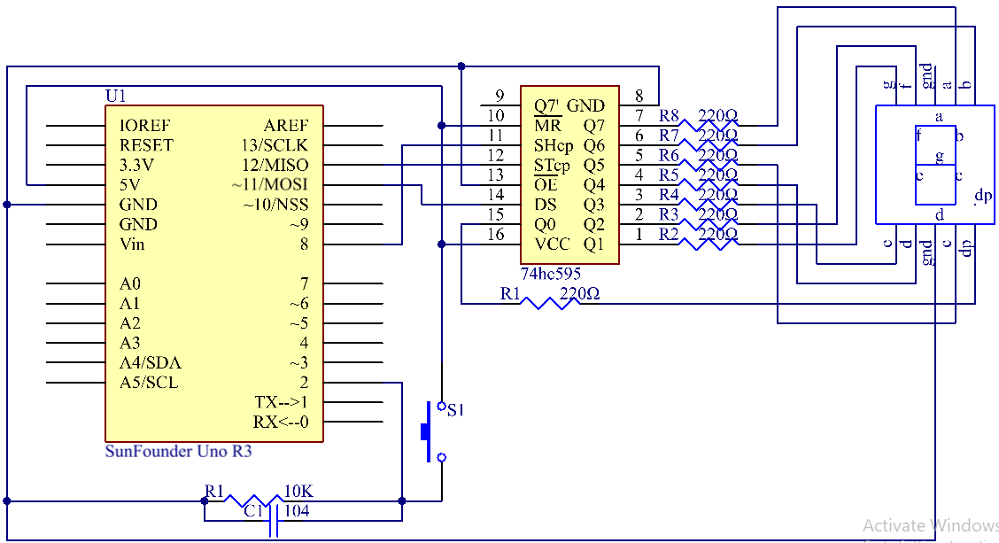

Lesson 21 74HC595¶
Introduction¶
Generally, there are two ways to drive a single 7-segment display. One way is to connect its 8 pins directly to eight ports on the Uno board. Or you can connect the 74HC595 to three ports of the Uno board and then the 7- segment display to the 74HC595. In this experiment, we will use the latter. By this way, we can save five ports – considering the Uno board’s limited ports, this is very important. Now let’s get started!

{kind=link}
Experimental Principle¶
7-Segment Display¶
A 7-segment display is an 8-shaped component which packages 7 LEDs. Each LED is called a segment – when energized, one segment forms part of a numeral (both decimal and hexadecimal) to be displayed. An additional 8th LED is sometimes used within the same package thus allowing the indication of a decimal point (DP) when two or more 7-segment displays are connected together to display numbers greater than ten.

Each of the LEDs in the display is given a positional segment with one of its connection pins led out from the rectangular plastic package. These LED pins are labeled from “a” through to “g” representing each individual LED. The other LED pins are connected together forming a common pin. So by forward biasing the appropriate pins of the LED segments in a particular order, some segments will brighten and others stay dim, thus showing the corresponding character on the display.
The common pin of the display generally tells its type. There are two types of pin connection: a pin of connected cathodes and one of connected anodes, indicating Common Cathode (CC) and Common Anode (CA). As the name suggests, a CC display has all the cathodes of the 7 LEDs connected when a CA display has all the anodes of the 7 segments connected.
Common Cathode 7-Segment Display¶
In a common cathode display, the cathodes of all the LED segments are connected to the logic “0” or ground. Then an individual segment (a-g) is energized by a “HIGH”, or logic “1” signal via a current limiting resistor to forward bias the anode of the segment.

Common Anode 7-Segment Display¶
In a common anode display, the anodes of all the LED segments are connected to the logic “1”. Then an individual segment (a-g) is energized by a ground, logic “0” or “LOW” signal via a current limiting resistor to the cathode of the segment.

74HC595¶
The 74HC595 consists of an 8−bit shift register and a storage register with three−state parallel outputs. It converts serial input into parallel output so you can save IO ports of an MCU.
When MR (pin10) is high level and OE (pin13) is low level, data is input in the rising edge of SHcp and goes to the memory register through the rising edge of SHcp. If the two clocks are connected together, the shift register is always one pulse earlier than the memory register. There is a serial shift input pin (Ds), a serial output pin (Q) and an asynchronous reset button (low level) in the memory register. The memory register outputs a Bus with a parallel 8-bit and in three states. When OE is enabled (low level), the data in memory register is output to the bus.

Pins of 74HC595 and their functions:
Q0-Q7: 8-bit parallel data output pins, able to control 8 LEDs or 8 pins of 7-segment display directly.
Q7’: Series output pin, connected to DS of another 74HC595 to connect multiple 74HC595s in series
MR: Reset pin, active at low level; here it is directly connected to 5V.
SHcp: Time sequence input of shift register. On the rising edge, the data in shift register moves successively one bit, i.e. data in Q1 moves to Q2, and so forth. While on the falling edge, the data in shift register remain unchanged.
STcp: Time sequence input of storage register. On the rising edge, data in the shift register moves into memory register.
OE: Output enable pin, active at low level. Here connected to GND.
DS: Serial data input pin
VCC: Positive supply voltage
GND: Ground
Principle:¶
In the experiment MR (pin10) is connected to 5V (HIGH Level) and OE (pin 13) to GND (LOW Level). Therefore, the data is input into the rising edge of SHcp and enters the memory register through the rising edge. We use the shiftout() function to output a 8-bit data to the shift register through DS. In the rising edge of the SHcp, the data in the shift register moves successively one bit in one time, i.e. data in Q1 moves to Q2, and so forth. In the rising edge of STcp, data in the shift register moves into the memory register. All data will be moved to the memory register after 8 times. Then the data in the memory register is output to the bus (Q0-Q7). So the 16 characters are displayed in the 7-segment in turn.
The schematic diagram:
{kind=link}
Experimental Procedures¶
Step 1: Build the circuit (pay attention to the direction of the chip by the concave on it)

Step 2: Open the code file.
Step 3: Select the Board and Port.
Step 4: Upload the sketch to the board.
You should now see the 7-segment display from 0 to 9 and A to F.

Code¶
Code Analysis 21-1 Set the array elements¶
int datArray[16] = {252, 96, 218, 242, 102, 182, 190, 224, 254, 246,
238, 62, 156, 122, 158, 142};
This array stores the data of the 16 characters from 0 to F. 218 stands for 2, which you can calculate by yourself. To display 2, the segment f and c of the 7-segment display must be low level (dim).
Since the segment f and c are connected to Q2 and Q5 of the 74HC595, set both Q0, Q2 and Q5 (the dot) as low level and leave the rest pins as high level. Therefore, the values of Q7 Q6 Q5 Q4 Q3 Q2 Q1 Q0 are 1 1 0 1 1 0 1 0.
Change the binary numbers into decimal ones: 1x27+1x26+0x25+1x24+1x23+0x22+1x21+0x20=218.

So that’s the value for the number 2 to be displayed. You can calculate other characters similarly.
Code Analysis 21-2 Display 0-F in the 7-segment display¶
for(int num = 0; num < 16; num++)
{
digitalWrite(STcp,LOW); //ground ST_CP and hold low for as long as you
are transmitting
shiftOut(DS,SHcp,MSBFIRST,datArray[num]);
//return the latch pin high to signal chip that it
//no longer needs to listen for information
digitalWrite(STcp,HIGH); //pull the ST_CPST_CP to save the data
delay(1000); //wait for a second
}
Set STcp as low level first and then high level. It will generate a rising edge pulse of STcp.
shiftOut() is used to shift out a byte of data one bit at a time, which means to shift a byte of data in dataArray[num] to the shifting register with the DS pin. MSBFIRST means to move from high bits.
After digitalWrite(STcp,HIGH) is run, the STcp will be at the rising edge. At this time, the data in the shift register will be moved to the memory register.
A byte of data will be transferred into the memory register after 8 times. Then the data of memory register is output to the bus (Q0-Q7). You will see a character is displayed on the 7-segment. Then delay for 1000ms. After that line, go back to for(). The loop repeats until all the characters are displayed in the 7-segment display one by one after 16 times.
Copyright Notice¶
All contents including but not limited to texts, images, and code in this manual are owned by the SunFounder Company. You should only use it for personal study, investigation, enjoyment, or other non-commercial or nonprofit purposes, under the related regulations and copyrights laws, without infringing the legal rights of the author and relevant right holders. For any individual or organization that uses these for commercial profit without permission, the Company reserves the right to take legal action.